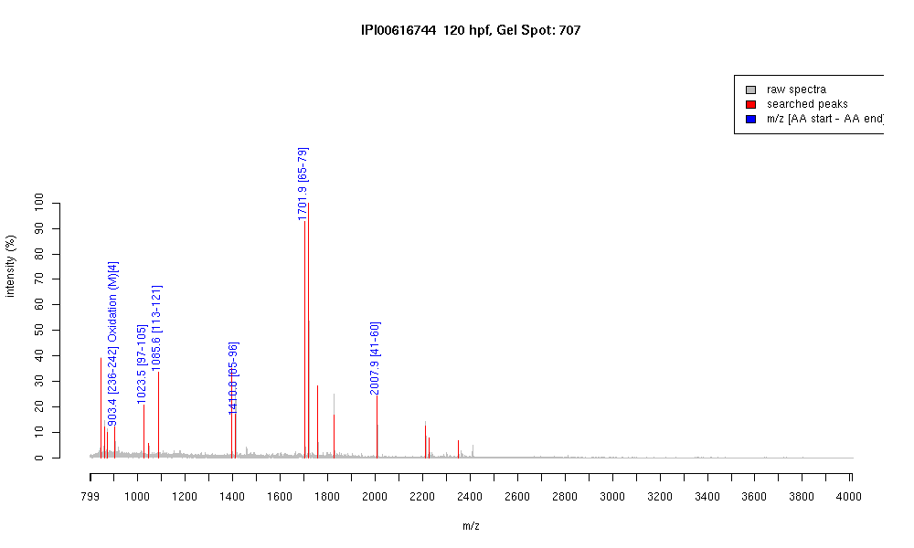

| Name | PREDICTED: similar to alpha tubulinsubunit isoform 4 |
|---|---|
| MW | 32543.6 |
| PI | 4.57 |
| Mascot Protein Score | 138 |
| Masses (matched / unmatched) | 6 / 23 |

| Peptide | MZ (calc) | MZ (observed) | Error (DA) | Error (PPM) | Start | Stop | Modifications |
|---|---|---|---|---|---|---|---|
| FDLMYAK | 903.428 | 903.4272 | -0.0008 | -1 | 236 | 242 | Oxidation (M)[4] |
| EDAANNYAR | 1023.449 | 1023.4545 | 0.0055 | 5 | 97 | 105 | |
| EIIDLVLDR | 1085.6201 | 1085.6216 | 0.0015 | 1 | 113 | 121 | |
| QLFHPEQLITGK | 1410.7739 | 1410.7665 | -0.0074 | -5 | 85 | 96 | |
| AVFVDLEPTVIDEVR | 1701.9058 | 1701.9036 | -0.0022 | -1 | 65 | 79 | |
| TIGGGDDSFNTFFSETGAGK | 2007.8929 | 2007.8936 | 0.0007 | 0 | 41 | 60 |